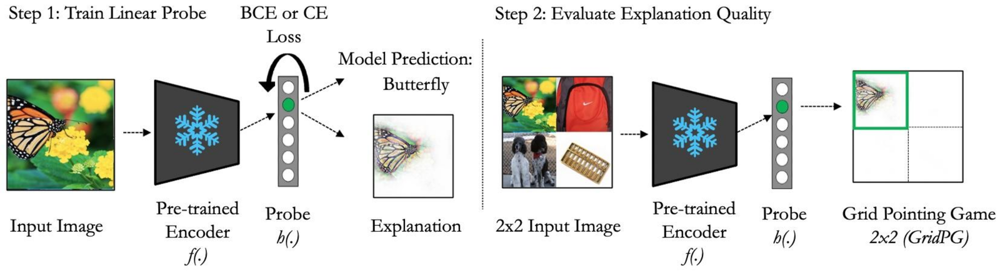
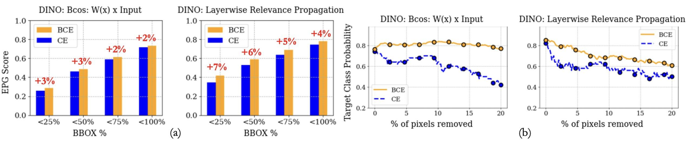

How to Probe: Simple Yet Effective Techniques for Improving Post-hoc Explanations
How you train the classification head — not the pre-training scheme — decides whether an explanation localizes.
Post-hoc attribution methods are assumed to be applicable independently of how a model was trained. We challenge that assumption: the training details of a pre-trained model’s classification layer — under 10% of its parameters — matter far more for explanation quality than the pre-training scheme itself. Two simple changes follow. Training linear probes with binary cross-entropy (BCE) instead of cross-entropy (CE) removes a softmax shift-invariance that lets functionally identical probes produce wildly different attributions, yielding consistently more class-specific explanations. And lightweight, interpretable B-cos MLP probes better distil class-specific features from frozen representations, improving both accuracy and localization. The effects are robust across supervised, self-supervised (MoCo, BYOL, DINO) and vision-language (CLIP) backbones and across a wide range of attribution methods.
The overlooked assumption
Importance attribution methods assign a value to each input pixel to help explain why a deep network made a decision, and they are almost always applied post-hoc — on a trained model, as if the training were irrelevant to the explanation (Bach et al. 2015; Selvaraju et al. 2017; Böhle et al. 2022; Shrikumar et al. 2017). As pre-training paradigms multiply (Caron et al. 2021; Grill et al. 2020; Chen et al. 2020; Radford et al. 2021), that convenience hides a real question: does the explanation actually depend on how the model was trained?
This paper answers yes — but locates the dependence somewhere surprising. It is not mainly the pre-training scheme. It is the probe: the classification head trained on top of a frozen backbone, often under 10% of the model’s parameters. Change only how that head is optimized, leave the backbone untouched, and the resulting explanations can change dramatically.

Why the loss function matters
The study trains probes on frozen features and then applies common attribution methods — among them LRP (Bach et al. 2015), Integrated Gradients (Sundararajan et al. 2017), B-cos (Böhle et al. 2022), Input\timesGradient (Shrikumar et al. 2017), GradCAM (Selvaraju et al. 2017), ScoreCAM (Wang et al. 2020) and LIME (Ribeiro et al. 2016) — scoring the explanations on localization, pixel deletion, compactness and complexity. The default choice for training a probe is the cross-entropy (CE) loss,
\mathcal{L}_{\text{CE},i} = -\sum_c \log \frac{\exp(\hat{y}_{c,i})}{\sum_k \exp(\hat{y}_{k,i})}\, t_{c,i},
with \hat{y}_{c,i} the logit for class c on image i and t_{c,i} the one-hot label. The trouble is a symmetry: softmax — and therefore CE — is invariant to adding the same shift \delta_i to every logit. Crucially, that shift can be produced by displacing the probe’s weight vectors by a fixed \Delta \vec{w}, since \delta_i = \Delta\vec{w}^\top \vec{a}_i on the frozen representation \vec{a}_i. There are therefore infinitely many linear probes that are indistinguishable to the CE objective, yet — because attribution methods read the model’s weights — produce different explanations.1
1 The paper makes this concrete with two functionally equivalent CE probes that give identical predictions and identical loss on every input, yet yield very different LRP attributions and grid-pointing-game scores (65.7% vs. 11.9%). Since CE cannot tell the two apart, it offers no reason to prefer the class-specific one.
The fix is to remove the symmetry. Binary cross-entropy (BCE),
\mathcal{L}_{\text{BCE},i} = -\sum_c t_{c,i}\log\sigma(\hat{y}_{c,i}) + (1 - t_{c,i})\log\bigl(1 - \sigma(\hat{y}_{c,i})\bigr),
is not shift-invariant: a constant positive shift on non-target classes is now penalized, biasing the probe toward class-specific features. The result is better calibrated, more localized explanations — even though the BCE and CE models differ by nothing more than a single linear layer.
What the numbers say
Training linear probes with BCE instead of CE improves localization (grid-pointing-game, GridPG) consistently across pre-training paradigms and attribution methods. For conventional ResNet-50 backbones explained with LRP, GridPG rises across the board:
| Backbone (LRP, conventional) | CE | BCE | Gain |
|---|---|---|---|
| CLIP | 19% | 51% | +32 p.p. |
| MoCo | 50% | 80% | +30 p.p. |
| BYOL | 48% | 66% | +18 p.p. |
| DINO | 52% | 92% | +40 p.p. |
The same trend holds for B-cos explanations, where switching to BCE lifts GridPG by 33 p.p. for MoCo (48%→81%), 28 p.p. for BYOL (43%→71%) and 37 p.p. for DINO (43%→80%). BCE probes also produce more stable predictions under pixel deletion and more compact, less complex attributions (Figure 3). By contrast, the pre-training method has limited impact on explanation quality, with no paradigm consistently ahead.

Stronger probes, better explanations
The second lever is probe complexity. Frozen self-supervised and vision-language features are not necessarily linearly separable for an arbitrary downstream task (He et al. 2022), which can limit how well a linear probe — and the explanations read from it — isolates a class. Training a deeper, interpretable B-cos MLP probe (Böhle et al. 2024) on the same frozen features improves both accuracy and localization. Going from a single linear probe to a 3-layer B-cos MLP (conventional backbones, Integrated Gradients, reported as accuracy / GridPG):
| Backbone | Linear | 3-layer MLP |
|---|---|---|
| MoCo | 66.9 / 69.0 | 71.3 / 83.0 |
| BYOL | 69.3 / 83.0 | 72.1 / 85.0 |
| DINO | 70.6 / 70.0 | 73.1 / 89.0 |
The gains in accuracy and localization appear consistently only for B-cos MLPs: conventional MLPs can raise the energy-pointing-game score on COCO yet decrease GridPG on ImageNet. The recommendation is therefore specific — probe frozen backbones with B-cos MLPs when well-localized attributions matter. These probes weigh in at roughly 10% of the model’s parameters, making this a genuinely lightweight intervention. As a by-product, the paper shows for the first time that inherently interpretable B-cos models are compatible with self-supervised learning, preserving both performance and interpretability.
Takeaway
Explanation quality for pre-trained models depends more on how the classification layer is trained for the downstream task than on the pre-training paradigm — a practical caveat for anyone treating post-hoc attributions as training-agnostic. Two simple changes follow directly: train probes with BCE rather than CE, and use lightweight, interpretable B-cos MLP probes. Both are validated across fully-supervised, self-supervised and vision-language backbones and a broad suite of attribution methods (Caron et al. 2021; Grill et al. 2020; Chen et al. 2020; Radford et al. 2021). A copyable BibTeX entry for this paper is generated below; full references appear in the margin.
Citation
@inproceedings{gairola2025,
author = {Gairola, Siddhartha and Böhle, Moritz and Locatello,
Francesco and Schiele, Bernt},
title = {How to {Probe:} {Simple} {Yet} {Effective} {Techniques} for
{Improving} {Post-hoc} {Explanations}},
booktitle = {International Conference on Learning Representations
(ICLR)},
date = {2025-03-01},
doi = {10.48550/arXiv.2503.00641}
}